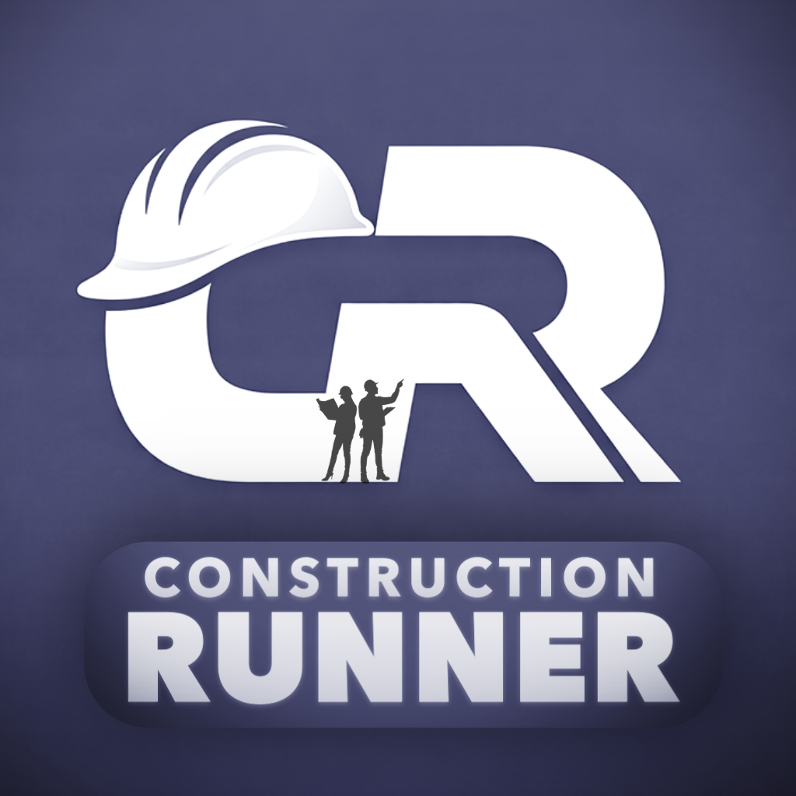

Construction Runner
www.construction-runner.com
Where we are today. Construction Runner already runs a site day to day: phone sign-in that knows when someone is on site (and signs them out when they leave), inductions, RAMS and briefing sign-off, near-miss reporting, tasks, deliveries, assets, messaging and subcontractor onboarding — with a web dashboard for the office.
That puts us level with the main UK competitors. The upgrades below are about moving ahead of them.
Most site apps are digital paperwork: they record that something was signed. Construction Runner already knows three things paperwork apps don't:
Every upgrade below plugs into those three, so the app doesn't just store records — it notices when something is wrong and tells someone.
After reading a RAMS or toolbox talk, the worker answers 3 quick questions generated from that exact document. Different questions each time; a bad question is pulled automatically if too many people get it wrong.
Why it matters: a signature proves someone tapped "I agree". This proves they understood — much stronger evidence for clients, insurers and the HSE. No UK competitor combines this with live site sign-in.
Digital permit-to-work (hot works, height, confined space, excavation, isolations), but smarter:
Finish offline sign-in and sign-out so workers on sites with poor signal are still recorded accurately, and everything syncs when they reconnect.
| Step | Upgrade | Why this order |
|---|---|---|
| 1 | Offline sign-in fix | Reliability of what customers already use |
| 2 | CSCS cards that stay checked | Quick win; permits depend on it |
| 3 | Understanding checks on RAMS & briefings | Our headline difference |
| 4 | Visitor QR sign-in | High demand from buyers |
| 5 | Smart permits | Builds on steps 2 and 3 |
In one line
Construction Runner already runs the site. Next, it proves the right people are in the right place, qualified and briefed — and speaks up when they're not.